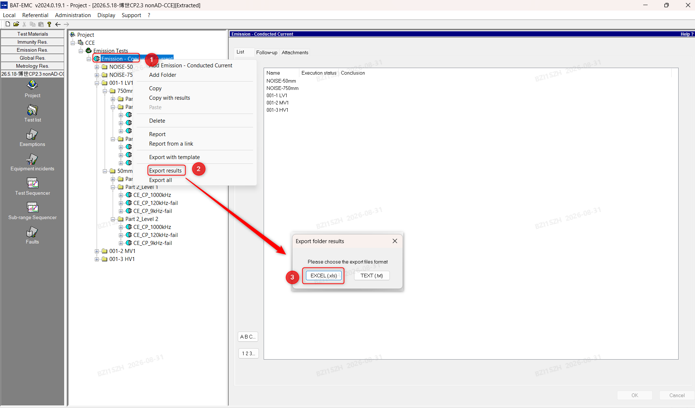
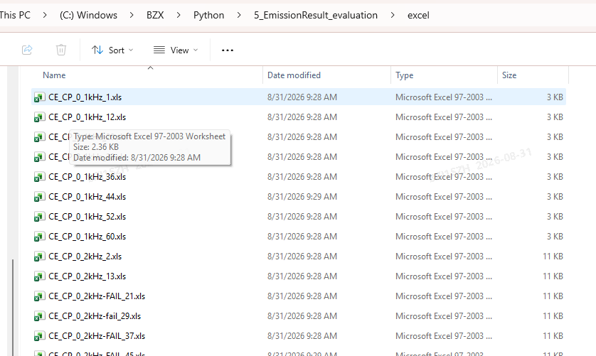
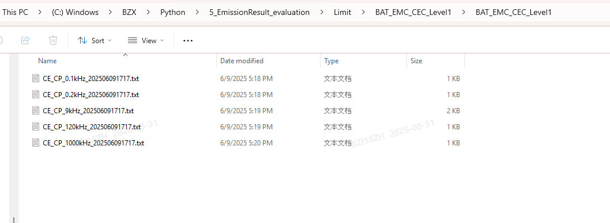

DATA PREPARATION
使用前先准备结果和限值文件
工具依靠文件名中的带宽（0.1kHz、0.2kHz、9kHz、120kHz、1000kHz）自动匹配测试结果与限值，请保留 BAT-EMC 导出的原始文件名。
A
从 BAT-EMC 导出结果
在项目树中右键 Emission - Conducted Current 测试文件夹，选择 Export results，然后选择 EXCEL (.xls)。不要选择 TEXT (.txt)。

图 1 · BAT-EMC 结果导出方式
B
保存并整理结果文件名
将所有导出的 .xls 文件直接放在同一个结果文件夹中，不要再按 Level 建立子文件夹。工具会扫描该文件夹中的全部 .xls 文件。
推荐命名格式
CE_CP_<RBW>_<测试距离>_Sample <编号>[_FAIL].xls
RBW 必须替换为以下一种实际带宽，工具依靠它匹配对应限值：
0_1kHz0_2kHz9kHz120kHz1000kHz
测试距离建议使用 50mm、750mm 等格式；样品编号写在 Sample 后。超限结果可在末尾增加 FAIL，通过结果可省略。
CE_CP_0_1kHz_50mm_Sample 1.xls
CE_CP_9kHz_50mm_Sample 1_FAIL.xls
CE_CP_120kHz_750mm_Sample 2.xls
CE_CP_1000kHz_750mm_Sample 2_FAIL.xls

图 2 · 结果文件夹示例
C
保存限值文件
限值根目录下分别保存 BAT_EMC_CEC_Level1 和 BAT_EMC_CEC_Level2。每个 Level 中应包含五种带宽对应的 .txt 文件。
Limit/
├─ BAT_EMC_CEC_Level1/
│ └─ BAT_EMC_CEC_Level1/
│ ├─ CE_CP_0.1kHz_*.txt
│ ├─ CE_CP_0.2kHz_*.txt
│ ├─ CE_CP_9kHz_*.txt
│ ├─ CE_CP_120kHz_*.txt
│ └─ CE_CP_1000kHz_*.txt
└─ BAT_EMC_CEC_Level2/
└─ BAT_EMC_CEC_Level2/
└─ 同样的五种带宽限值文件

图 3 · 单个 Level 的限值文件示例
工具操作
01
选择数据
依次选择结果文件夹和限值文件夹。直接打开 HTML 时，浏览器仅在本机内存中读取文件，不会上传数据。
浏览结果
在“测试结果”中切换文件，选择 Level 1/2 和 Peak、Q-Peak、Avg 检波器。系统会按文件名自动匹配频段限值。
判断裕量
裕量 = 限值 − 测试结果。橙色表示裕量小于设定阈值，红色表示结果已超过限值；默认阈值为 3 dB。
缩放图表
在 Plot 内拖动框选局部放大，滚轮以指针位置缩放。双击图表或点击 ↺ 恢复全图，点击 ⛶ 查看完整图。
导出报告
“导出风险频段 CSV”保存当前文件和检波器的风险区间；“导出 Overview 报告”汇总当前 Level 下全部结果。